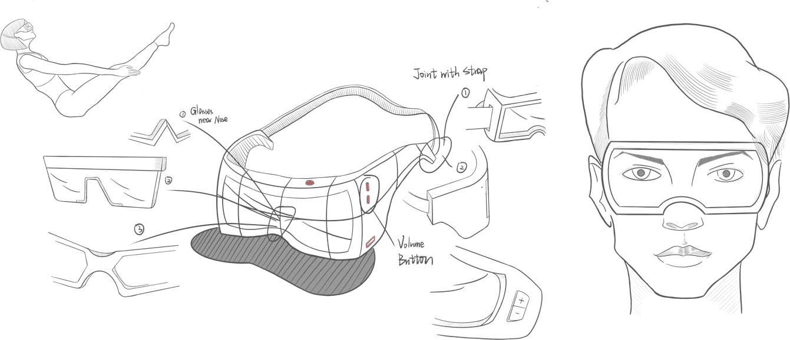

To get the data about weight-loss experience from potential users, I adopt the method of qusetionnaire survey and collect their personal information, exact strategies and success rate.
为了获得潜在用户的减肥体验数据，我采用问卷调查的方法，收集他们的个人信息、准确的策略和成功率。
Distribution Method: Online distribution
问卷发布方式：网上发布
Distribution Time: July 25th，2018 to July 29th
问卷发布时间：2018年7月25日-29日
Participant Number: 208
问卷填写人数：208
- Weight-loss is a common behaviour in people at all ages. 减肥是各个年龄段人群的普遍行为。
- Females are tend to be more interested in relevant affairs.(participants come from all categories and they all fill out this questionnaire by voluntary 女性往往对相关事务更感兴趣。（参与者来自各个类别，都是自愿填写本问卷）
- People ’s overall attitude towards weight-loss is positive. (more than 90% participants hold the view that weight-loss has positive effect on us) 人们对减肥的总体态度是积极的。 （超过90%的参与者认为减肥对我们有积极的影响）
- Exercising more and dieting are two most popular methods, which are also both easily implemented and mild to our health. 多运动和节食是两种最流行的方法，它们也很容易实施，对我们的健康也很温和。
- The choices that have to pay extra expenditure are rarely considered by participants in general. 一般参与者很少考虑必须支付额外费用的选择。
1. 已完成的任务标注成灰色，未完成的任务标注成红色。点击安排页面中的某一训练，用户可以直接跳转到对应的视频页面。
2. 用户需要每天更新自己的身体数据。没有更新的部分标注成红色。
3. 用户可以在这里查看不同阶段的数据。他们未来的数据会根据已有的训练安排和身体数据生成，最后一个就是他们的最终目标。
4. 向下滑动屏幕，可以下拉出寻找筛选器，旨在帮助用户在自定义条件下找到理想的培训。用户也可以直接搜索确切的名称。此提示图标将在用户第一次操作后隐藏。
5. 根据热门排名和用户信息推荐训练。
6. 在页面的顶部，这个按钮是供用户添加他们自己的动态。随着用户不断向下滑动页面，该按钮将变为用于返回顶部的快捷按钮。
7. 这两个地方用于模拟烹饪，在盘中完成处理食材和翻炒等。用户只需从搜索区域中拖出所需的食材即可。
8. 每一根条形柱代表烹饪的一个步骤。 用户可以通过长按来查看相关信息。
Smart Bracelet | 智能手环
VR Glasses | VR眼镜